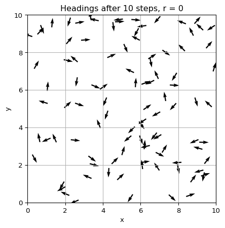
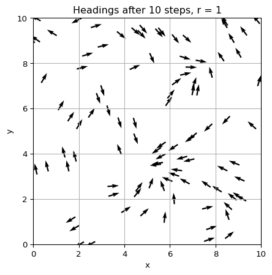
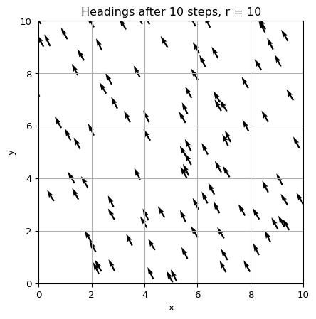

Vicsek Lab: Validation
Module 2: Synchronization and Collective Behaviour
Before animating the Vicsek model, validate your implementation in limits where you know the answer (Vicsek et al. 1995). Here you use static plots to see how the interaction radius \(r\) affects alignment. With \(r = 0\) each particle only sees itself, so the headings perform independent random walks. With \(r = L\) every particle sees every other (up to the edges, see the limitation in Vectorized Update), so the model becomes a mean-field alignment.
You will run the Vicsek model for a few time steps and visualize the headings of all particles for different values of \(r\). This will help you see the transition from random motion to local and global alignment as the interaction radius increases.
Exercise
Run the code below with three interaction radii: \(r = 0\), \(r = L / 10\), and \(r = L\), where \(L\) is the box size. What do you observe? How does the interaction radius affect the alignment of the particles?
import matplotlib.pyplot as plt
# Initialize parameters
num_particles = 100
box_size = 10 # L
interaction_radius = 1.0 # r
noise_strength = 0.1 # eta
v0 = 0.03 # speed of particles
# Initialize particle positions and headings
xy, theta = initialize_particles(num_particles, box_size)
# Update positions and headings for a few time steps
for t in range(10):
xy, theta = vicsek_equations(
xy=xy,
theta=theta,
noise=noise_strength,
box_size=box_size,
radius_interaction=interaction_radius,
v0=v0,
)
# Plot the headings of the particles
plt.figure(figsize=(6, 6))
plt.quiver(
xy[0],
xy[1],
np.cos(theta),
np.sin(theta),
angles='xy',
scale_units='xy',
scale=2, # bigger scale means smaller arrows
)
# Limit the plot to the box size
plt.xlim(0, box_size)
plt.ylim(0, box_size)
plt.title('Particle headings after 10 time steps')
plt.xlabel('x')
plt.ylabel('y')
plt.grid()
plt.show()
Solution
Radius \(r = 0\). For \(r = 0\), there is no interaction between particles, so they will move in random directions based on their initial headings and noise. The plot will show a random distribution of arrows with no clear alignment.
Radius \(r = L / 10\). For \(r = L / 10\), particles will interact with others within a radius of one-tenth of the box size. This means that each particle will have a limited chance to align with nearby particles, leading to small local clusters of aligned particles. The plot will show groups of arrows pointing in similar directions, indicating partial alignment.

Radius \(r = L\). For \(r = L\), particles will interact with all other particles in the box. This means that each particle will tend to align with the average direction of all particles, leading to global alignment. The plot will show arrows mostly pointing in the same direction, indicating strong alignment.

Exercise
Add a quantitative check. For \(r = L\) and \(\eta = 0.1\), print the order parameter after 10 and after 100 steps. For \(r = 0\), do the same. Which values do you expect?
for radius in [0.0, box_size]:
xy, theta = initialize_particles(num_particles, box_size)
for t in range(100):
# TODO: advance one step with radius_interaction=radius
# TODO: print the order parameter after 10 and after 100 steps
pass
Solution
For \(r = L\) (and \(L = 10\)) almost every pair is within the radius, so after a few steps all headings are close to the common mean and \(\varphi\) is close to \(1\), reduced slightly by the noise. For \(r = 0\) the headings do not interact and \(\varphi\) stays of order \(1/\sqrt{N} = 0.1\) at all times. If your code gives something else, check the neighbor search and the angle average.
for radius in [0.0, box_size]:
xy, theta = initialize_particles(num_particles, box_size)
for t in range(100):
xy, theta = vicsek_equations(
xy=xy, theta=theta, noise=noise_strength, box_size=box_size,
radius_interaction=radius, v0=v0,
)
if t + 1 in (10, 100):
print(f"r = {radius}, step {t + 1}: phi = {vicsek_order_parameter(theta):.3f}")Next: Animation.
References
Vicsek, Tamás, András Czirók, Eshel Ben-Jacob, Inon Cohen, and Ofer Shochet. 1995. “Novel Type of Phase Transition in a System of Self-Driven Particles.” Physical Review Letters 75 (6): 1226.